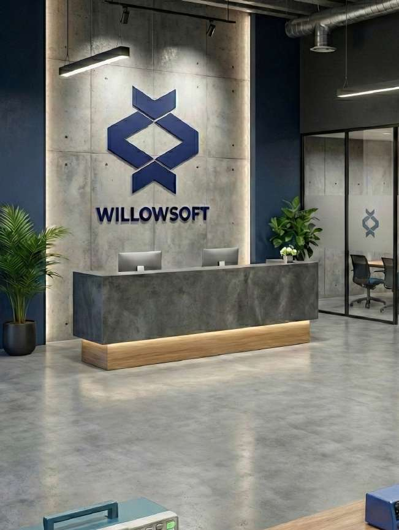

Production-First Thinking
Every design decision is evaluated against field reality — power budgets, enclosure constraints, RF environment, and manufacturing tolerances.

Company
Founded in 2020, WillowSoft grew from an R&D-first engineering team into a globally recognized connected product company — recognized as a Technology Export Champion in 2023 with active deployments across 15+ countries.
About Us
Founded in 2020, WillowSoft delivers embedded hardware and software solutions for industrial and IoT applications. The team focuses on low-power architecture, LoRa connectivity, firmware reliability, custom hardware design, backend systems, mobile and web interfaces, and production readiness.
How We Work
Every design decision is evaluated against field reality — power budgets, enclosure constraints, RF environment, and manufacturing tolerances.
We don't hand off. The same team that designs the hardware writes the firmware, builds the backend, and ships the interface. No translation loss between layers.
Systems we deploy are expected to operate for years without intervention. We engineer for that reality — not for the demo.
Company History
WillowSoft was founded with a focus on R&D, embedded systems, and high-tech product development.
The company achieved high-tech export milestones and was recognized as a Technology Export Champion.
WillowSoft expanded its international presence with products and engineering projects across 15 countries.
Who We Work With
Companies like Honeywell and SLB work with WillowSoft on custom sensor nodes, Modbus integration layers, and field-deployed connected hardware for industrial environments.
Brands including Beko and Coca-Cola have commissioned connected product firmware, backend data platforms, and mobile interfaces for consumer-facing IoT initiatives.
Aero Healthcare and AT&T require the highest reliability standards. WillowSoft delivers embedded systems built for regulated environments and carrier-grade connectivity requirements.
Work with us
Tell us what you're building. We'll tell you how we'd approach it.